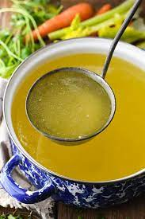

Chicken Broth

Description
This crockpot recipe for whole chicken soup makes broth for use in other recipes.
Because it's made in the slow cooker, you don't need to fuss with it.
I like to use breasts and wings, but any bone-in pieces will make a nice broth.
Ingredients
- 2 ½ pounds bone-in chicken pieces
- 6 cups water
- 2 stalks celery, chopped
- 2 carrots, chopped
- 1 onion, quartered
- 1 tablespoon dried basil
Steps
- Place chicken, water, celery, carrots, onion, and basil in a slow cooker.
- Cook on Low for 8 to 10 hours. Strain and discard vegetables. Chicken meat may be removed from bones and used in soup.